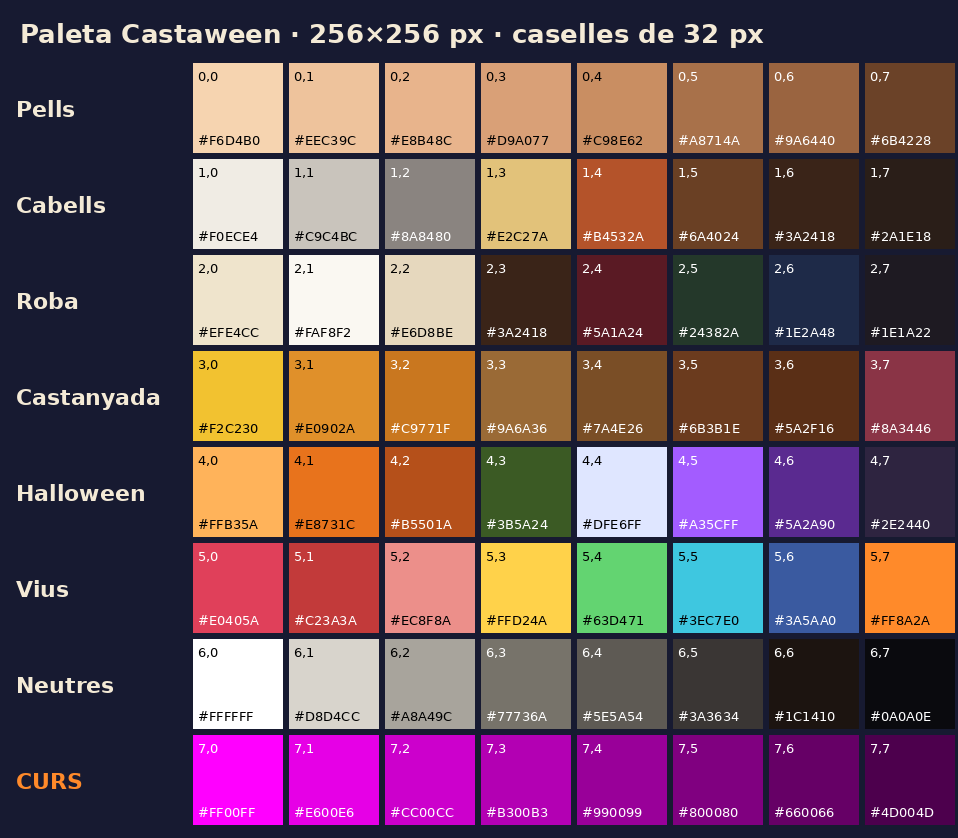

← Torna a Castaween
Models i escala de Castaween
Guia pas a pas per preparar i entregar models
Descarrega la guia per a l'alumnat en PDF · Blender, entrega i mides
Tothom treballa en metres: 1 unitat = 1 metre. La castanyera d'entrega fa 1,80 m d'alt, amb l'origen a terra.
Paleta obligatòria
Tots els models s'han de texturitzar amb aquesta paleta, sense modificar-la. És l'única textura admesa: el Taller i les entregues rebutgen els models amb una altra textura o sense textura. Així tot el joc manté el mateix estil gràfic.
Descarrega la paleta · PNG 512 × 512 px

- 64 colors plans (dalt a l'esquerra): cada cara al centre d'una casella.
- 16 degradats (a la dreta): una illa UV allargada dins d'una franja. El costat clar és a l'esquerra.
- 16 ulls (baix a l'esquerra): el pla de l'ull encaixat dins de la casella.
- La fila magenta i el degradat CURS es tornen del color del curs.
A Blender: material amb Image Texture → Base Color, interpolació Closest. Exporta amb Material: Export i Images: Automatic. Pas a pas
Castanyera nova del projecte
L'única castanyera del joc i el model de referència per a les entregues: un sol material amb la paleta oficial (colors plans, fila CURS i ulls de la paleta), 1.450 triangles i 1,80 m d'alçada. Sense esquelet: el joc l'anima automàticament.
Descarrega la castanyera · GLB
| Dimensió a Blender | Mida |
|---|
| Alçada · Z | 1,800 m |
| Amplada · X | 1,119 m |
| Fondària · Y | 1,234 m |
Amplada i fondària inclouen la faldilla i el cistell: serveixen per comparar proporcions, no cal copiar la silueta.
Descarrega les mides exactes · JSON
Monstres, arbres i objectes
Models integrats del joc, ajustats a les alçades de la guia d’entrega. Dimensions en metres a Blender: alçada Z, amplada X i fondària Y. Els arbres i les pedres són exemplars de les variants del joc.
Descarrega totes les referències · ZIP
Mides exactes de tots els models · JSON · Instruccions i detalls de cada model
Monstres
Arbres
Objectes i construccions
| Descarrega el model | Alt | Ample | Fons |
|---|
| Casa del poble · GLB | 4,600 | 4,618 | 4,618 |
|---|
| Roca · GLB | 1,400 | 1,331 | 1,404 |
|---|
| Tram de marge (1,2 m) · GLB | 1,100 | 1,200 | 0,979 |
|---|
| Làpida · GLB | 0,850 | 0,582 | 0,163 |
|---|
| Carabassa decorativa · GLB | 0,650 | 0,803 | 0,803 |
|---|
| Cripta · GLB | 4,000 | 2,899 | 2,899 |
|---|
| Portal de Halloween · GLB | 1,600 | 5,108 | 5,009 |
|---|
| Paradeta de castanyes · GLB | 3,600 | 6,366 | 1,948 |
|---|
| Foguera (olla) · GLB | 1,000 | 3,773 | 3,866 |
|---|
| Torradora (defensa) · GLB | 1,300 | 1,217 | 1,186 |
|---|
| Caixa d'armes · GLB | 0,600 | 0,800 | 0,800 |
|---|
| Panellet · GLB | 0,550 | 0,682 | 0,695 |
|---|
| Tronc de llenya · GLB | 0,240 | 0,469 | 0,180 |
|---|
Referències estàtiques amb colors originals per vèrtex, sense esquelets ni animacions. No inclouen halos, ombres, flames ni altres efectes dinàmics. Les entregues han de complir la paleta i els límits de la guia; aquests GLB poden superar-los. El marge té 1,20 m de llarg per poder-se repetir.
Com treballar a Blender
- A Scene Properties → Units, tria Metric, Unit Scale: 1.000 i Length: Meters.
- Importa el GLB amb File → Import → glTF 2.0. No el redimensionis en importar-lo.
- Deixa la referència al costat del teu model, en una col·lecció pròpia. Mesura el conjunt del personatge: en aquesta referència el cos i el braç són dues peces.
- Respecta l'alçada de la taula del teu model (castanyera: 1,80 m), amb Z cap amunt, mirant cap a −Y i amb l'origen al centre de la base, a terra.
- Aplica les transformacions amb Ctrl+A → All Transforms. Exporta només el teu model, sense la referència, càmeres ni llums, en glTF Binary (.glb), amb +Y Up.
- Texturitza'l només amb la paleta obligatòria.
- Valida'l a Personatge → Taller de models abans d'entregar-lo.
Blender converteix els eixos en importar/exportar glTF: al fitxer GLB, l'alçada és Y i la cara mira cap a +Z. No cal girar-lo manualment després d'importar-lo.
Guia completa de models, límits i exportació · Descarrega les instruccions